Apply spatial analyses to non-spatial scRNA-seq data
Lambda Moses
2023-02-12
Source:vignettes/nonspatial.Rmd
nonspatial.RmdIntroduction
For areal spatial data, the spatial neighborhood graph is used to
indicate proximity, and is required for all spatial analysis methods in
the package spdep. One of the methods to find the spatial
neighborhood graph is k nearest neighbors, which is also commonly used
in gene expression PCA space for graph-based clustering of cells in
non-spatial scRNA-seq data. Then what if we use the k nearest neighbors
graph in PCA space rather than histological space for “spatial” analyses
for non-spatial scRNA-seq data?
Here we try such an analysis on a human peripheral blood mononuclear cells (PBMC) scRNA-seq dataset, which doesn’t originally have histological spatial organization. These are the packages loaded for the analysis:
library(Voyager)
library(SpatialFeatureExperiment)
library(SpatialExperiment)
#> Loading required package: SingleCellExperiment
#> Loading required package: SummarizedExperiment
#> Loading required package: MatrixGenerics
#> Loading required package: matrixStats
#>
#> Attaching package: 'MatrixGenerics'
#> The following objects are masked from 'package:matrixStats':
#>
#> colAlls, colAnyNAs, colAnys, colAvgsPerRowSet, colCollapse,
#> colCounts, colCummaxs, colCummins, colCumprods, colCumsums,
#> colDiffs, colIQRDiffs, colIQRs, colLogSumExps, colMadDiffs,
#> colMads, colMaxs, colMeans2, colMedians, colMins, colOrderStats,
#> colProds, colQuantiles, colRanges, colRanks, colSdDiffs, colSds,
#> colSums2, colTabulates, colVarDiffs, colVars, colWeightedMads,
#> colWeightedMeans, colWeightedMedians, colWeightedSds,
#> colWeightedVars, rowAlls, rowAnyNAs, rowAnys, rowAvgsPerColSet,
#> rowCollapse, rowCounts, rowCummaxs, rowCummins, rowCumprods,
#> rowCumsums, rowDiffs, rowIQRDiffs, rowIQRs, rowLogSumExps,
#> rowMadDiffs, rowMads, rowMaxs, rowMeans2, rowMedians, rowMins,
#> rowOrderStats, rowProds, rowQuantiles, rowRanges, rowRanks,
#> rowSdDiffs, rowSds, rowSums2, rowTabulates, rowVarDiffs, rowVars,
#> rowWeightedMads, rowWeightedMeans, rowWeightedMedians,
#> rowWeightedSds, rowWeightedVars
#> Loading required package: GenomicRanges
#> Loading required package: stats4
#> Loading required package: BiocGenerics
#>
#> Attaching package: 'BiocGenerics'
#> The following objects are masked from 'package:stats':
#>
#> IQR, mad, sd, var, xtabs
#> The following objects are masked from 'package:base':
#>
#> anyDuplicated, aperm, append, as.data.frame, basename, cbind,
#> colnames, dirname, do.call, duplicated, eval, evalq, Filter, Find,
#> get, grep, grepl, intersect, is.unsorted, lapply, Map, mapply,
#> match, mget, order, paste, pmax, pmax.int, pmin, pmin.int,
#> Position, rank, rbind, Reduce, rownames, sapply, setdiff, sort,
#> table, tapply, union, unique, unsplit, which.max, which.min
#> Loading required package: S4Vectors
#>
#> Attaching package: 'S4Vectors'
#> The following objects are masked from 'package:base':
#>
#> expand.grid, I, unname
#> Loading required package: IRanges
#> Loading required package: GenomeInfoDb
#> Loading required package: Biobase
#> Welcome to Bioconductor
#>
#> Vignettes contain introductory material; view with
#> 'browseVignettes()'. To cite Bioconductor, see
#> 'citation("Biobase")', and for packages 'citation("pkgname")'.
#>
#> Attaching package: 'Biobase'
#> The following object is masked from 'package:MatrixGenerics':
#>
#> rowMedians
#> The following objects are masked from 'package:matrixStats':
#>
#> anyMissing, rowMedians
library(DropletUtils)
library(BiocNeighbors)
library(scater)
#> Loading required package: scuttle
#> Loading required package: ggplot2
library(scran)
library(bluster)
library(BiocParallel)
library(scuttle)
library(stringr)
library(BiocSingular)
library(spdep)
#> Loading required package: sp
#>
#> Attaching package: 'sp'
#> The following object is masked from 'package:IRanges':
#>
#> %over%
#> The following object is masked from 'package:SpatialFeatureExperiment':
#>
#> bbox
#> Loading required package: spData
#> To access larger datasets in this package, install the spDataLarge
#> package with: `install.packages('spDataLarge',
#> repos='https://nowosad.github.io/drat/', type='source')`
#> Loading required package: sf
#> Linking to GEOS 3.10.2, GDAL 3.4.2, PROJ 8.2.1; sf_use_s2() is TRUE
library(patchwork)
library(dplyr)
#>
#> Attaching package: 'dplyr'
#> The following object is masked from 'package:Biobase':
#>
#> combine
#> The following objects are masked from 'package:GenomicRanges':
#>
#> intersect, setdiff, union
#> The following object is masked from 'package:GenomeInfoDb':
#>
#> intersect
#> The following objects are masked from 'package:IRanges':
#>
#> collapse, desc, intersect, setdiff, slice, union
#> The following objects are masked from 'package:S4Vectors':
#>
#> first, intersect, rename, setdiff, setequal, union
#> The following objects are masked from 'package:BiocGenerics':
#>
#> combine, intersect, setdiff, union
#> The following object is masked from 'package:matrixStats':
#>
#> count
#> The following objects are masked from 'package:stats':
#>
#> filter, lag
#> The following objects are masked from 'package:base':
#>
#> intersect, setdiff, setequal, union
theme_set(theme_bw())Here we download the filtered Cell Ranger gene count matrix from the 10X website. The empty droplets have already been removed.
if (!dir.exists("filtered_feature_bc_matrix")) {
download.file("https://cf.10xgenomics.com/samples/cell-exp/3.0.2/5k_pbmc_v3_nextgem/5k_pbmc_v3_nextgem_filtered_feature_bc_matrix.tar.gz", destfile = "5kpbmc.tar.gz", quiet = TRUE)
system("tar -xzf 5kpbmc.tar.gz")
}This is loaded into R as a SingleCellExperiment (SCE)
object.
(sce <- read10xCounts("filtered_feature_bc_matrix/"))
#> Warning: as(<dgTMatrix>, "dgCMatrix") is deprecated since Matrix 1.5-0; do
#> as(., "CsparseMatrix") instead
#> class: SingleCellExperiment
#> dim: 33538 5155
#> metadata(1): Samples
#> assays(1): counts
#> rownames(33538): ENSG00000243485 ENSG00000237613 ... ENSG00000277475
#> ENSG00000268674
#> rowData names(3): ID Symbol Type
#> colnames: NULL
#> colData names(2): Sample Barcode
#> reducedDimNames(0):
#> mainExpName: NULL
#> altExpNames(0):
colnames(sce) <- sce$BarcodeQuality control (QC)
Here we perform some basic QC, to remove low quality cells with high proportion of mitochondrially encoded counts.
is_mito <- str_detect(rowData(sce)$symbol, "^MT-")
sum(is_mito)
#> [1] 13
sce <- addPerCellQCMetrics(sce, subsets = list(mito = is_mito))
names(colData(sce))
#> [1] "Sample" "Barcode" "sum"
#> [4] "detected" "subsets_mito_sum" "subsets_mito_detected"
#> [7] "subsets_mito_percent" "total"The addPerCellQCMetrics() function computes the total
UMI counts detected per cell (sum), number of genes
detected per cell (detected), sum and
detected for mitochondrial counts, and percentage of
mitochondrial counts per cell.
plotColData(sce, "sum") +
plotColData(sce, "detected") +
plotColData(sce, "subsets_mito_percent")
Here a 2D histogram is plotted to better show point density on the plot.
plotColDataBin2D(sce, x = "sum", y = "detected")
plotColDataBin2D(sce, x = "sum", y = "subsets_mito_percent")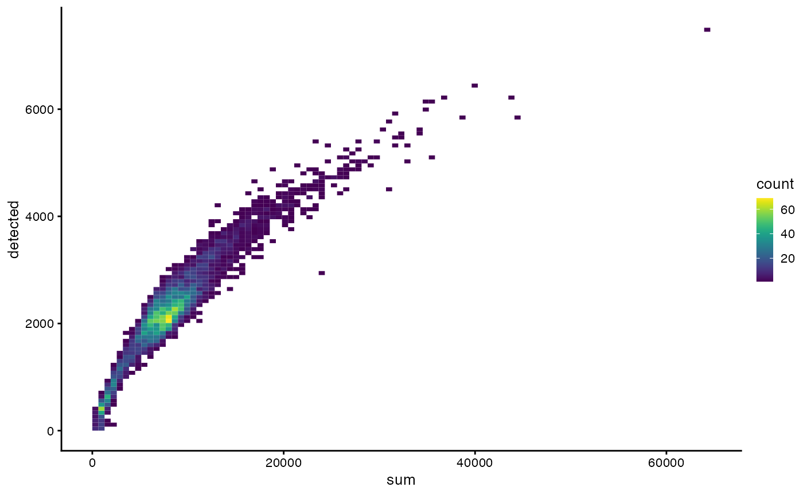
Remove cells with >20% mitochondrial counts
Basic non-spatial analyses
Here we normalize the data, perform PCA, cluster the cells, and find marker genes for the clusters.
#clusts <- quickCluster(sce)
#sce <- computeSumFactors(sce, cluster = clusts)
#sce <- sce[, sizeFactors(sce) > 0]
sce <- logNormCounts(sce)Use the highly variable genes for PCA
hvgs <- getTopHVGs(sce, n = 2000)
set.seed(29)
sce <- runPCA(sce, ncomponents = 30, BSPARAM = IrlbaParam(),
subset_row = hvgs, scale = TRUE)How many PCs shall we use for further analyses?
ElbowPlot(sce, ndims = 30)
Variance explained drops sharply from PC1 and then from PC4 and then levels off. Plot genes with the largest loadings of the top 4 PCs:
plotDimLoadings(sce)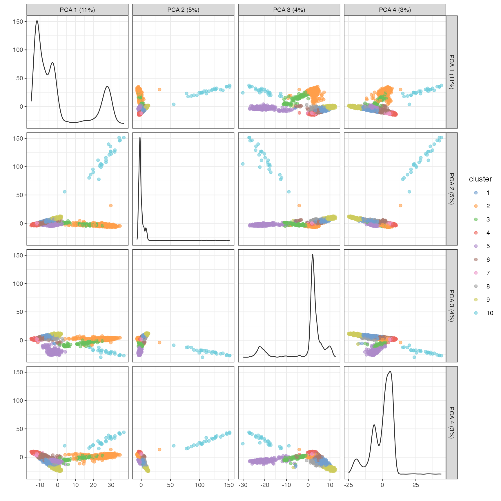
To keep a little more information, we use 10 PCs, after which variance explained levels off even more.
sce$cluster <- clusterRows(reducedDim(sce, "PCA")[,1:10],
BLUSPARAM = SNNGraphParam(cluster.fun = "leiden",
k = 10,
cluster.args = list(
resolution=0.5,
objective_function = "modularity"
)))Here we plot the cells in the first 4 PCs in a matrix plot. The diagonals are density plots of the number of cells as projected on each PC. The x axis should correspond to the columns of the matrix plot, and the y axis should correspond to the rows, so the plot in row 1 column 2 has PC2 in the x axis and PC1 in the y axis. The cells are colored by clusters found in the previous code chunk.
plotPCA(sce, ncomponents = 4, color_by = "cluster")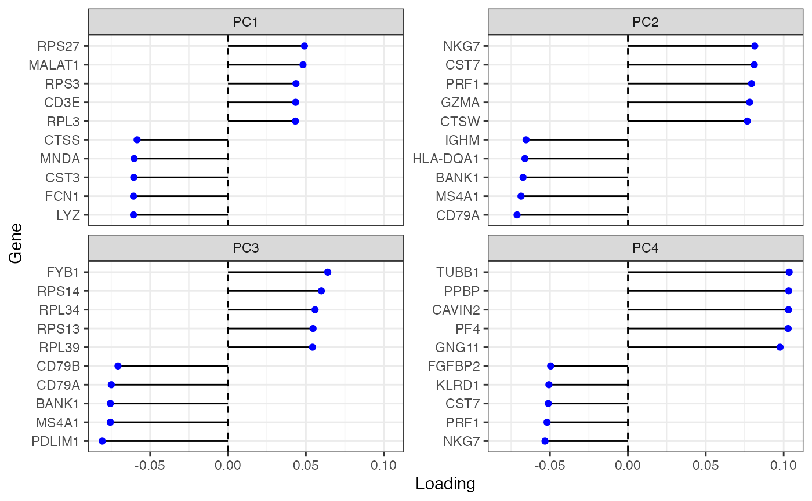
How many cells are there in each cluster?
table(sce$cluster)
#>
#> 1 2 3 4 5 6 7 8 9
#> 443 963 1280 197 590 696 91 341 28Then we use the conventional Wilcoxon rank sum test to find marker genes for each cluster. The test is compares each cluster to the rest of the cells, and only genes more highly expressed in the cluster compared to the other cells are considered. The results are a list of data frames, where each data frame is for one cluster. Areas under the receiver operator curve (AUC) distinguishing each cluster vs. any other cluster are also included, the closer to 1 the better while 0.5 means no better than random guessing. The false discovery rate (FDR) column is the Benjamini-Hochberg corrected p-values. Genes in these data frames are already sorted by p-values.
markers <- findMarkers(sce, groups = colData(sce)$cluster,
test.type = "wilcox", pval.type = "all", direction = "up")
markers[[4]]
#> DataFrame with 21932 rows and 11 columns
#> p.value FDR summary.AUC AUC.1 AUC.2
#> <numeric> <numeric> <numeric> <numeric> <numeric>
#> ENSG00000251562 8.32533e-18 1.82591e-13 0.997643 0.918054 0.997048
#> ENSG00000198840 3.42464e-10 3.75546e-06 0.860587 0.762132 0.744691
#> ENSG00000114857 2.19738e-09 1.60643e-05 0.838651 0.673316 0.772493
#> ENSG00000198786 1.00558e-08 5.51360e-05 0.827955 0.680971 0.830107
#> ENSG00000244754 2.68777e-07 1.17896e-03 0.629404 0.676193 0.785197
#> ... ... ... ... ... ...
#> ENSG00000277400 1 1 0.5 0.498871 0.500000
#> ENSG00000276256 1 1 0.5 0.498871 0.498962
#> ENSG00000278817 1 1 0.5 0.494357 0.482866
#> ENSG00000277856 1 1 0.5 0.500000 0.500000
#> ENSG00000275063 1 1 0.5 0.500000 0.499481
#> AUC.3 AUC.5 AUC.6 AUC.7 AUC.8 AUC.9
#> <numeric> <numeric> <numeric> <numeric> <numeric> <numeric>
#> ENSG00000251562 0.931567 0.950486 0.939852 0.981592 0.909054 0.997643
#> ENSG00000198840 0.838192 0.740790 0.812241 0.920176 0.878411 0.860587
#> ENSG00000114857 0.702604 0.712131 0.668909 0.727116 0.658157 0.838651
#> ENSG00000198786 0.837857 0.802327 0.736248 0.866682 0.663099 0.827955
#> ENSG00000244754 0.705354 0.678121 0.690432 0.753640 0.629404 0.910080
#> ... ... ... ... ... ... ...
#> ENSG00000277400 0.498828 0.499153 0.499282 0.500000 0.500000 0.5
#> ENSG00000276256 0.498828 0.498305 0.498563 0.500000 0.500000 0.5
#> ENSG00000278817 0.487500 0.498305 0.492816 0.472527 0.497067 0.5
#> ENSG00000277856 0.500000 0.498305 0.500000 0.500000 0.500000 0.5
#> ENSG00000275063 0.500000 0.499153 0.500000 0.500000 0.500000 0.5See how specific the top markers to each cluster
top_markers <- unlist(lapply(markers, function(x) head(rownames(x), 1)))
top_markers_symbol <- rowData(sce)[top_markers, "symbol"]
plotExpression(sce, top_markers_symbol, x = "cluster", point_fun = function(...) list(),
swap_rownames = "symbol")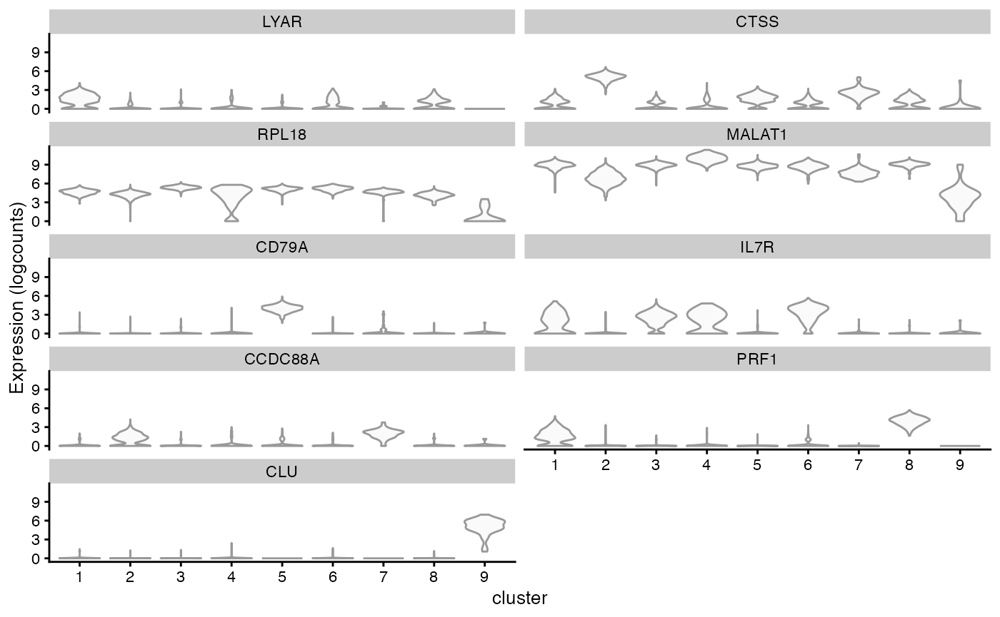
“Spatial” analyses for QC metrics
Find k nearest neighbor graph in PCA space for Moran’s I. We are not
using spdep here since its nb2listwdist()
function for distance based edge weighting requires 2-3 dimensional
spatial coordinates while the coordinates here have 10 dimensions. Here
inverse distance weighting is used for edge weights.
foo <- findKNN(reducedDim(sce, "PCA")[,1:10], k=10, BNPARAM=AnnoyParam())
# Split by row
foo_nb <- asplit(foo$index, 1)
dmat <- 1/foo$distance
# Row normalize the weights
dmat <- sweep(dmat, 1, rowSums(dmat), FUN = "/")
glist <- asplit(dmat, 1)
# Sort based on index
ord <- lapply(foo_nb, order)
foo_nb <- lapply(seq_along(foo_nb), function(i) foo_nb[[i]][ord[[i]]])
class(foo_nb) <- "nb"
glist <- lapply(seq_along(glist), function(i) glist[[i]][ord[[i]]])
listw <- list(style = "W",
neighbours = foo_nb,
weights = glist)
class(listw) <- "listw"
attr(listw, "region.id") <- colnames(sce)While there’s no histological space, we convert the SCE object into
SpatialFeatureExperiment (SFE) to use the spatial analysis
and plotting functions from Voyager, and pretend that the
first 2 PCs are the histological space.
spe <- toSpatialExperiment(sce, spatialCoords = reducedDim(sce, "PCA")[,1:2])
sfe <- toSpatialFeatureExperiment(spe)
sfe
#> class: SpatialFeatureExperiment
#> dim: 21932 4629
#> metadata(1): Samples
#> assays(2): counts logcounts
#> rownames(21932): ENSG00000238009 ENSG00000239945 ... ENSG00000275063
#> ENSG00000271254
#> rowData names(3): ID symbol Type
#> colnames(4629): AAACCCAAGACAGCTG-1 AAACCCAAGTTAACGA-1 ...
#> TTTGTTGTCACGGACC-1 TTTGTTGTCCACACCT-1
#> colData names(11): Sample Barcode ... cluster sample_id
#> reducedDimNames(1): PCA
#> mainExpName: NULL
#> altExpNames(0):
#> spatialCoords names(2) : PC1 PC2
#> imgData names(0):
#>
#> Geometries:
#> colGeometries: centroids (POINT)
#>
#> Graphs:
#> sample01:Add the k nearest neighbor graph to the SFE object.
colGraph(sfe, "knn10") <- listwMoran’s I
sfe <- colDataMoransI(sfe, c("sum", "detected", "subsets_mito_percent"))
colFeatureData(sfe)[c("sum", "detected", "subsets_mito_percent"),]
#> DataFrame with 3 rows and 2 columns
#> moran_sample01 K_sample01
#> <numeric> <numeric>
#> sum 0.657380 16.44603
#> detected 0.746041 6.01002
#> subsets_mito_percent 0.437762 6.13555For total UMI counts (sum) and genes detected (detected), Moran’s I is quite strong, while it’s positive but weaker for percentage of mitochondrial counts. The second column, K, is kurtosis of the feature of interest.
Moran plot
How about the local variations on the k nearest neighbors graph? In the Moran plot, the x axis is the value for each cell, and the y axis is the average value among neighboring cells in the graph weighted by edge weights. The slope of the fitted line is Moran’s I. Sometimes there are clusters in this plot, showing different kinds of neighborhoods.
sfe <- colDataUnivariate(sfe, "moran.plot", c("sum", "detected", "subsets_mito_percent"))The dashed lines are the averages on the x and y axes.
moranPlot(sfe, "sum", color_by = "cluster")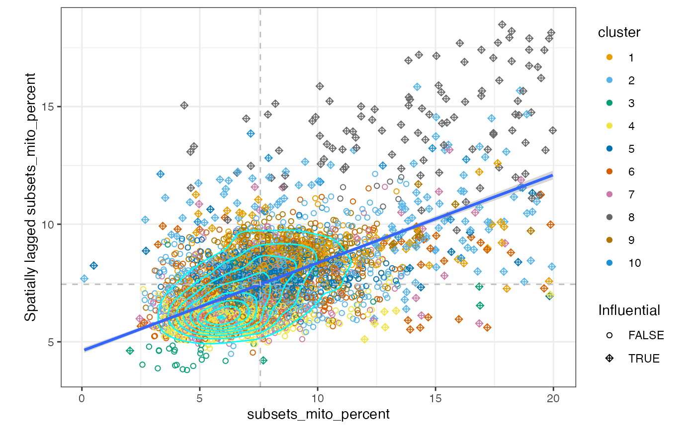
While most cells are in the cluster around the average, there is a cluster of cells with lower total counts whose neighbors also have lower total counts and a cluster of cells with higher total counts whose neighbors also have higher total counts. These clusters seem to be somewhat related to some gene expression based clusters.
moranPlot(sfe, "detected", color_by = "cluster")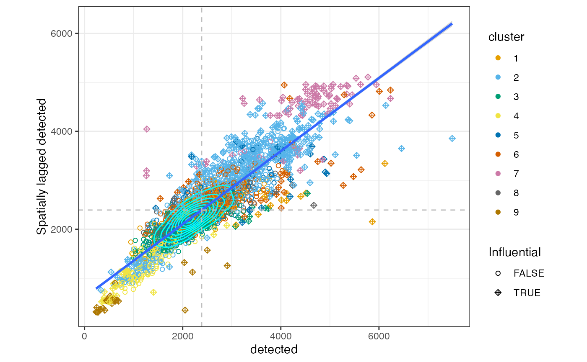
moranPlot(sfe, "subsets_mito_percent", color_by = "cluster")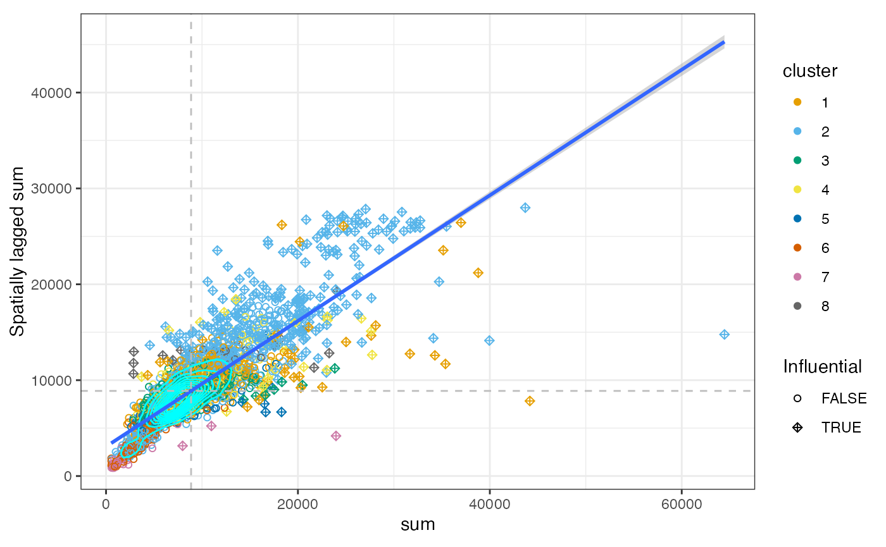
For the number of genes detected and percentage of mitochondrial counts there’s one main cluster on this plot but cells are somewhat separated by gene expression clusters, which is not surprising because the gene expression clusters are also based on the k nearest neighbor graph. Cluster 4 cells have higher percentage of mitochondrial counts and so do their neighbors.
Local Moran’s I
Also see local Moran’s I for these 3 QC metrics:
sfe <- colDataUnivariate(sfe, "localmoran", c("sum", "detected", "subsets_mito_percent"))Here we don’t have histological space. Then how to visualize the local “spatial” statistics? UMAP is bad but here PCA can somewhat separate the clusters, so in this case we can use the first 2 PCs as if they’re the histological space. As a reference, we plot the metrics themselves and the clusters in the first 2 PCs.
plotSpatialFeature(sfe, c("sum", "detected", "subsets_mito_percent", "cluster"))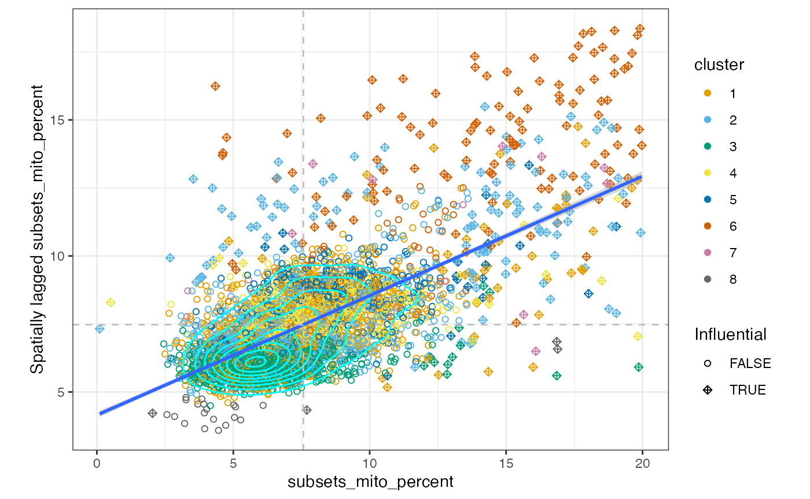
Here plot the local Moran’s I for these metrics in the first 2 PCs:
plotLocalResult(sfe, "localmoran", c("sum", "detected", "subsets_mito_percent"),
colGeometryName = "centroids",
divergent = TRUE, diverge_center = 0, ncol = 2)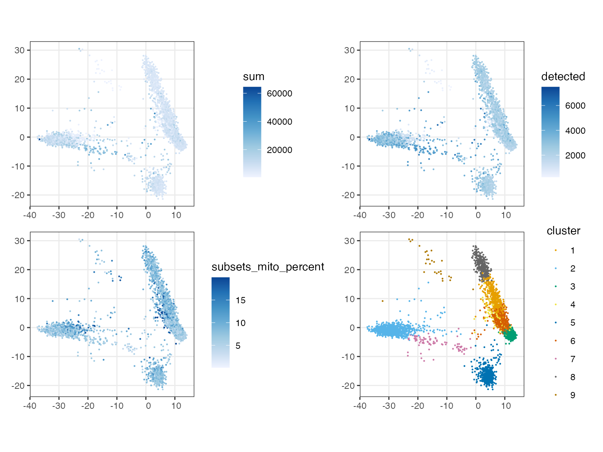
However, what if there’s no good 2D representation of the data for
easy plotting? Remember that here the k nearest neighbor graph was
computed on the first 10 PCs rather than the first 2 PCs. The graph is
not tied to the 2D representation. We can still plot histograms to show
the distribution and scatter plots to compare the same local metric for
different variables, which can be colored by another variable such as
cluster. This may be added to the next release of Voyager. For now we
add the results of interest to colData(sfe) and use the
existing colData plotting functions from
scater and Voyager.
localResultAttrs(sfe, "localmoran", "sum")
#> [1] "Ii" "E.Ii" "Var.Ii" "Z.Ii"
#> [5] "Pr(z != E(Ii))" "mean" "median" "pysal"
#> [9] "-log10p" "-log10p_adj"
sfe$sum_localmoran <- localResult(sfe, "localmoran", "sum")[,"Ii"]
sfe$detected_localmoran <- localResult(sfe, "localmoran", "detected")[,"Ii"]
sfe$pct_mito_localmoran <- localResult(sfe, "localmoran", "subsets_mito_percent")[,"Ii"]
# Colorblind friendly palette
data("ditto_colors")
plotColDataHistogram(sfe, c("sum_localmoran", "detected_localmoran",
"pct_mito_localmoran"), bins = 50,
fill_by = "cluster") +
scale_fill_manual(values = ditto_colors) +
scale_y_log10() +
annotation_logticks(sides = "l")
#> Warning: Transformation introduced infinite values in continuous y-axis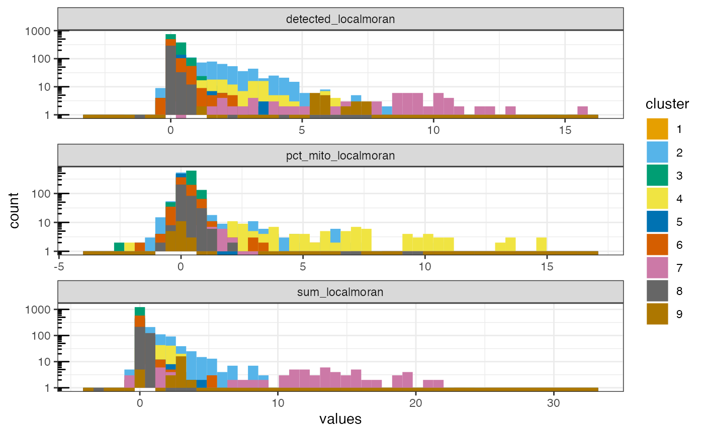
The y axis is log transformed (hence that warning when some bins have no cells) so the color of cells in the long tail can be seen because most cells don’t have very strong local Moran’s I. Cells in cluster 7 have high local Moran’s I in total UMI counts and genes detected, which means that they tend to be more homogeneous in these QC metrics.
How do local Moran’s I for these QC metrics relate to each other?
plotColData(sfe, x = "sum_localmoran", y = "detected_localmoran", color_by = "cluster")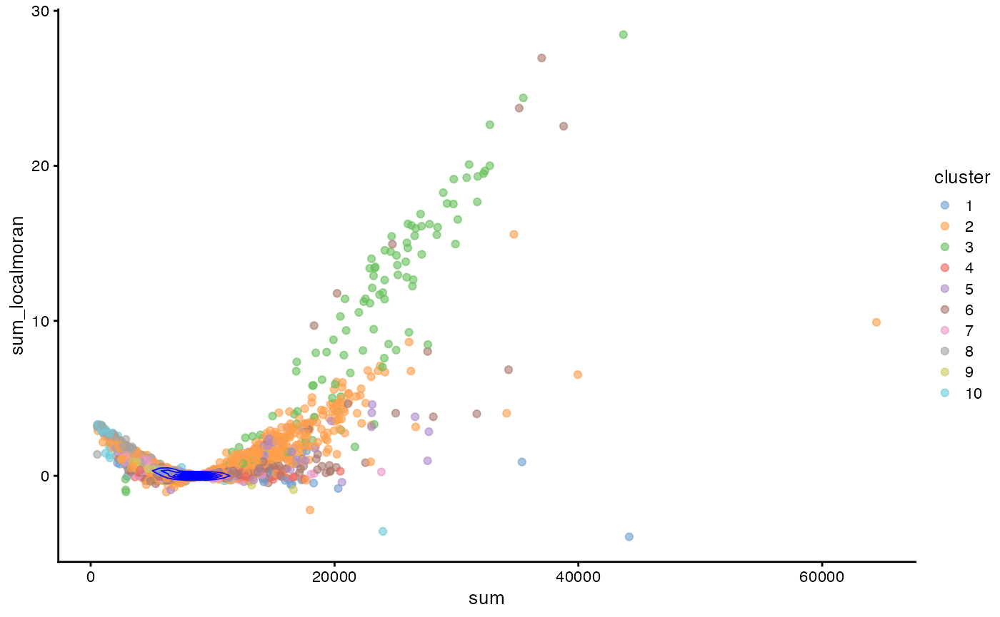
Cells more locally homogeneous in total UMI counts are also more homogeneous in number of genes detected, which is not surprising given the correlation between the two.
plotColData(sfe, x = "sum_localmoran", y = "pct_mito_localmoran",
color_by = "cluster")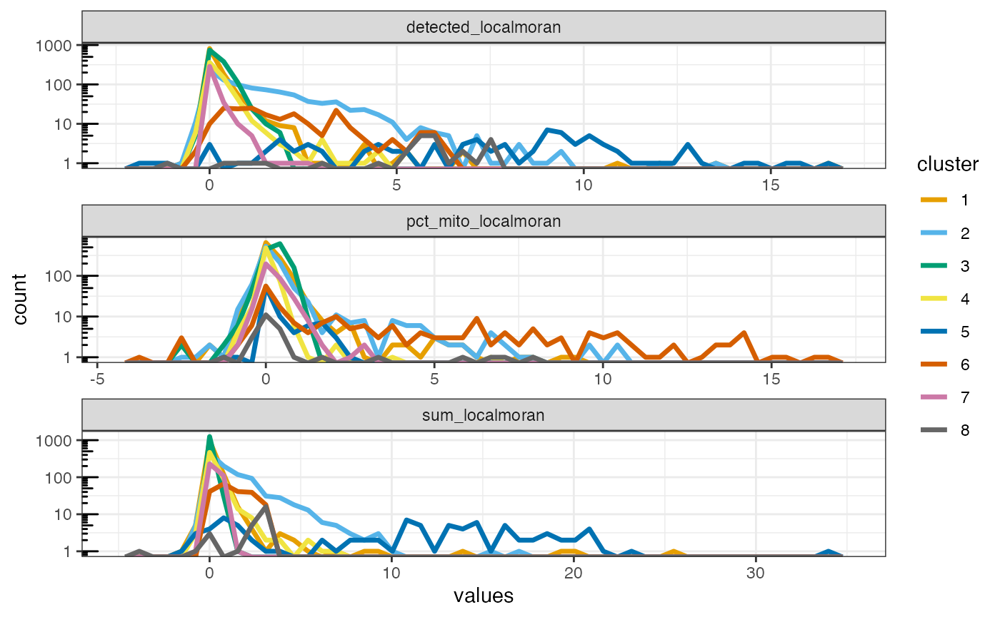
For local Moran’s I, sum vs percentage mitochondrial
counts shows a more interesting pattern highlighting clusters 4 and 7,
as in the Moran plots.
How does local Moran’s I relate to the value itself?
plotColData(sfe, x = "sum", y = "sum_localmoran", color_by = "cluster") +
geom_density2d(data = as.data.frame(colData(sfe)),
mapping = aes(x = sum, y = sum_localmoran), color = "blue",
linewidth = 0.3)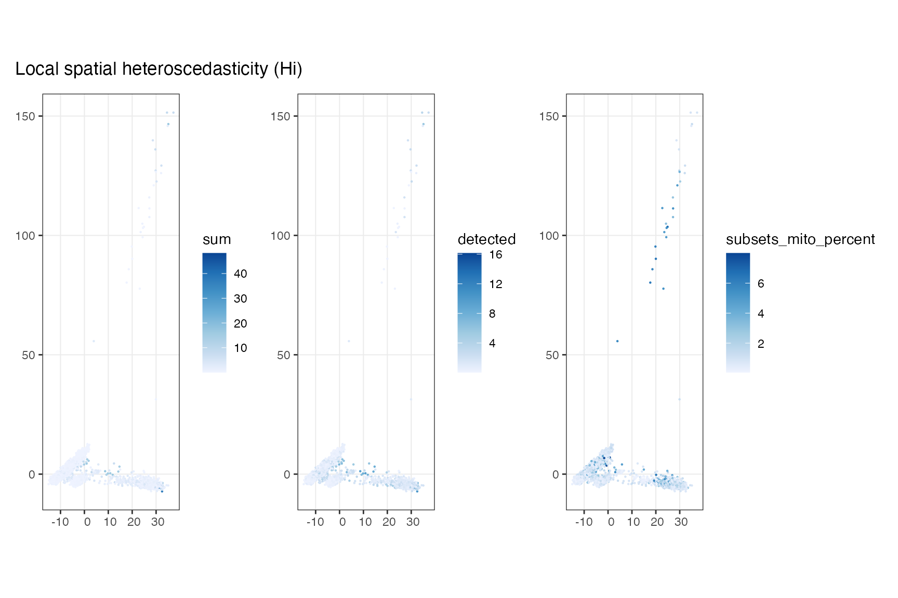
In this case, generally cells with higher total counts also tend to have higher local Moran’s I in total counts, but there’s another wing where cells with lower total counts have slightly higher local Moran’s I in total counts and there’s a central value of total counts with near 0 local Moran’s I. The density contour shows that cells are concentrated at that central value.
Local spatial heteroscedasticity (LOSH)
LOSH indicates heterogeneity around each cell in the k nearest neighbor graph.
sfe <- colDataUnivariate(sfe, "LOSH", c("sum", "detected", "subsets_mito_percent"))
plotLocalResult(sfe, "LOSH", c("sum", "detected", "subsets_mito_percent"),
colGeometryName = "centroids", ncol = 2)
Here we make the same non-spatial plots for LOSH as in local Moran’s I.
localResultAttrs(sfe, "LOSH", "sum")
#> [1] "Hi" "E.Hi" "Var.Hi" "Z.Hi" "x_bar_i" "ei"
sfe$sum_losh <- localResult(sfe, "LOSH", "sum")[,"Hi"]
sfe$detected_losh <- localResult(sfe, "LOSH", "detected")[,"Hi"]
sfe$pct_mito_losh <- localResult(sfe, "LOSH", "subsets_mito_percent")[,"Hi"]
plotColDataHistogram(sfe, c("sum_losh", "detected_losh",
"pct_mito_losh"), bins = 50,
fill_by = "cluster") +
scale_fill_manual(values = ditto_colors) +
scale_y_log10() +
annotation_logticks(sides = "l")
#> Warning: Transformation introduced infinite values in continuous y-axis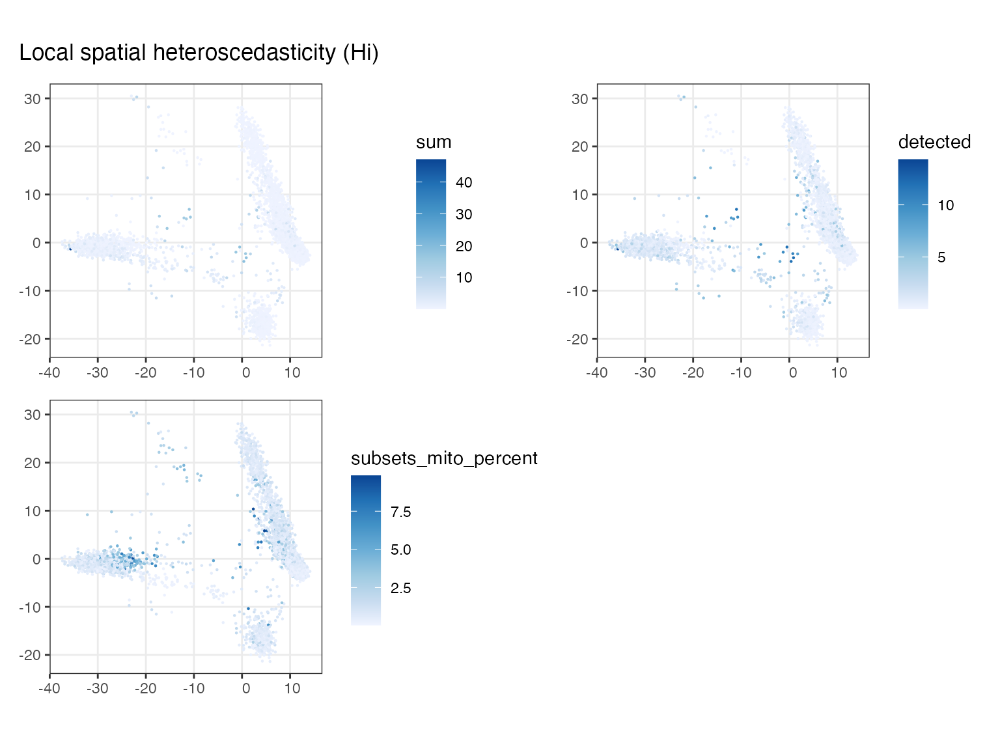
Here clusters 2 and 6 tend to be more locally heterogeneous. How do total counts and genes detected relate in LOSH?
plotColData(sfe, x = "sum_losh", y = "detected_losh", color_by = "cluster")
While generally cells higher in LOSH in total counts are also higher in LOSH in genes detected, there are some outliers that are very high in both, with more heterogeneous neighborhoods. Absolute distance to the neighbors is not taken into account when the adjacency matrix is row normalized. It would be interesting to see if those outliers tend to be further away from their 10 nearest neighbors, or in a region in the PCA space where cells are further apart.
How does total counts itself relate to its LOSH?
plotColData(sfe, x = "sum", y = "sum_losh", color_by = "cluster")
There does not seem to be a clear relationship in this case.
“Spatial” analyses for gene expression
Here we reorganize the differential expression results
top_markers_df <- lapply(seq_along(markers), function(i) {
out <- markers[[i]][markers[[i]]$FDR < 0.05, c("FDR", "summary.AUC")]
if (nrow(out)) out$cluster <- i
out
})
top_markers_df <- do.call(rbind, top_markers_df)
top_markers_df$symbol <- rowData(sce)[rownames(top_markers_df), "symbol"]Moran’s I
sfe <- runMoransI(sfe, features = hvgs, BPPARAM = MulticoreParam(2))The results are added to rowData(sfe). The NA’s are for
non-highly variable genes, as Moran’s I was only computed for highly
variable genes here.
rowData(sfe)
#> DataFrame with 21932 rows and 5 columns
#> ID symbol Type moran_sample01
#> <character> <character> <character> <numeric>
#> ENSG00000238009 ENSG00000238009 AL627309.1 Gene Expression NA
#> ENSG00000239945 ENSG00000239945 AL627309.3 Gene Expression NA
#> ENSG00000241599 ENSG00000241599 AL627309.4 Gene Expression NA
#> ENSG00000229905 ENSG00000229905 AL669831.2 Gene Expression NA
#> ENSG00000237491 ENSG00000237491 AL669831.5 Gene Expression NA
#> ... ... ... ... ...
#> ENSG00000278817 ENSG00000278817 AC007325.4 Gene Expression NA
#> ENSG00000278384 ENSG00000278384 AL354822.1 Gene Expression NA
#> ENSG00000277856 ENSG00000277856 AC233755.2 Gene Expression NA
#> ENSG00000275063 ENSG00000275063 AC233755.1 Gene Expression NA
#> ENSG00000271254 ENSG00000271254 AC240274.1 Gene Expression NA
#> K_sample01
#> <numeric>
#> ENSG00000238009 NA
#> ENSG00000239945 NA
#> ENSG00000241599 NA
#> ENSG00000229905 NA
#> ENSG00000237491 NA
#> ... ...
#> ENSG00000278817 NA
#> ENSG00000278384 NA
#> ENSG00000277856 NA
#> ENSG00000275063 NA
#> ENSG00000271254 NAHow are the Moran’s I’s for highly variable genes distributed? Also, where are the top cluster marker genes in this distribution?
plotRowDataHistogram(sfe, "moran_sample01", bins = 50) +
geom_vline(data = as.data.frame(rowData(sfe)[top_markers,]) |>
mutate(index = seq_along(top_markers)),
aes(xintercept = moran_sample01, color = index)) +
scale_color_continuous(breaks = scales::breaks_width(2))
#> Warning: Removed 19932 rows containing non-finite values (`stat_bin()`).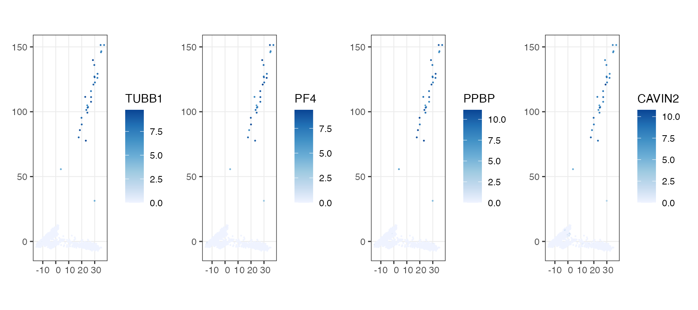
The top marker genes all have quite positive Moran’s I on the k nearest neighbor graph. It would also be interesting to color this histogram by gene sets. Since the k nearest neighbor graph was found in PCA space, which is based on gene expression, as expected, Moran’s I with this graph is mostly positive, although often not that strong. A small number of genes have slightly negative Moran’s I. What do the top genes look like in PCA?
top_moran <- head(rownames(sfe)[order(rowData(sfe)$moran_sample01, decreasing = TRUE)], 4)
plotSpatialFeature(sfe, top_moran, ncol = 2)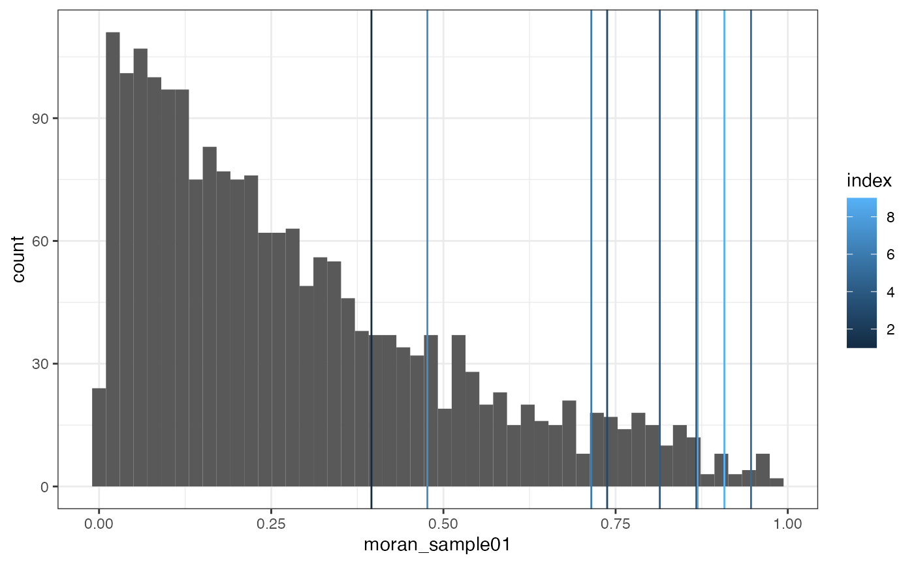
top_moran_symbol <- rowData(sfe)[top_moran, "symbol"]
plotExpression(sfe, top_moran_symbol, swap_rownames = "symbol")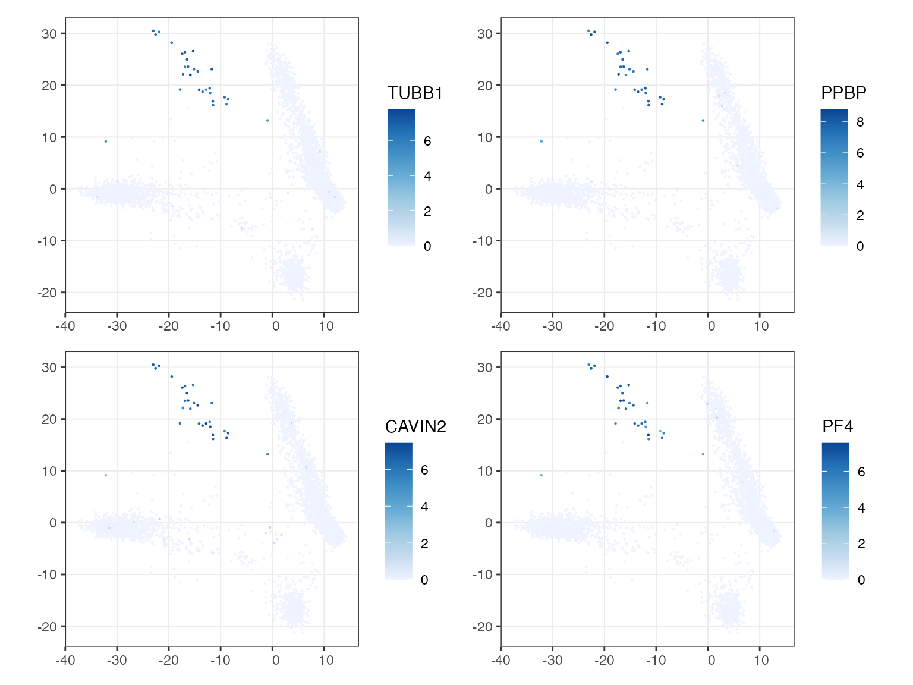
They are all marker genes for the same cluster, cluster 9. Perhaps these genes have high Moran’s I because they are specific to a cell type. Then how does the Moran’s I relate to cluster AUC and cluster differential expression p-value?
# See if markers are unique to clusters
anyDuplicated(rownames(top_markers_df))
#> [1] 0
top_markers_df$moran <- rowData(sfe)[rownames(top_markers_df), "moran_sample01"]
top_markers_df$log_p_adj <- -log10(top_markers_df$FDR)
top_markers_df$cluster <- factor(top_markers_df$cluster,
levels = seq_len(length(unique(top_markers_df$cluster))))How does the differential expression p-value relate to Moran’s I?
as.data.frame(top_markers_df) |>
ggplot(aes(log_p_adj, moran)) +
geom_point(aes(color = cluster)) +
geom_smooth(method = "lm") +
scale_color_manual(values = ditto_colors)
#> `geom_smooth()` using formula = 'y ~ x'
#> Warning: Removed 1217 rows containing non-finite values
#> (`stat_smooth()`).
#> Warning: Removed 1217 rows containing missing values (`geom_point()`).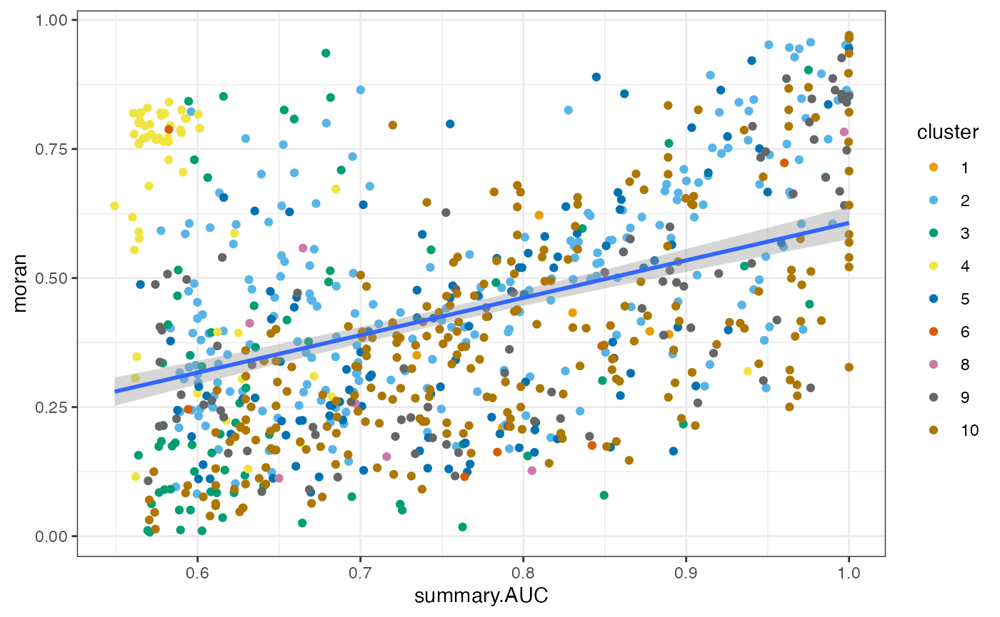
Generally more significant marker genes tend to have higher Moran’s I. This is not surprising because the clusters and Moran’s I here are both based on the k nearest neighbor graph.
as.data.frame(top_markers_df) |>
ggplot(aes(summary.AUC, moran)) +
geom_point(aes(color = cluster)) +
geom_smooth(method = "lm") +
scale_color_manual(values = ditto_colors)
#> `geom_smooth()` using formula = 'y ~ x'
#> Warning: Removed 1217 rows containing non-finite values
#> (`stat_smooth()`).
#> Warning: Removed 1217 rows containing missing values (`geom_point()`).
Similarly, genes with higher AUC tend to have higher Moran’s I. For other clusters, generally speaking, genes more specific to a cluster tend to have higher Moran’s I.
Use permutation testing to see if Moran’s I is statistically significant
sfe <- runUnivariate(sfe, "moran.mc", features = top_markers, nsim = 200)
top_markers_symbol
#> [1] "LYAR" "CTSS" "RPL18" "MALAT1" "CD79A" "IL7R" "CCDC88A"
#> [8] "PRF1" "CLU"
plotMoranMC(sfe, top_markers)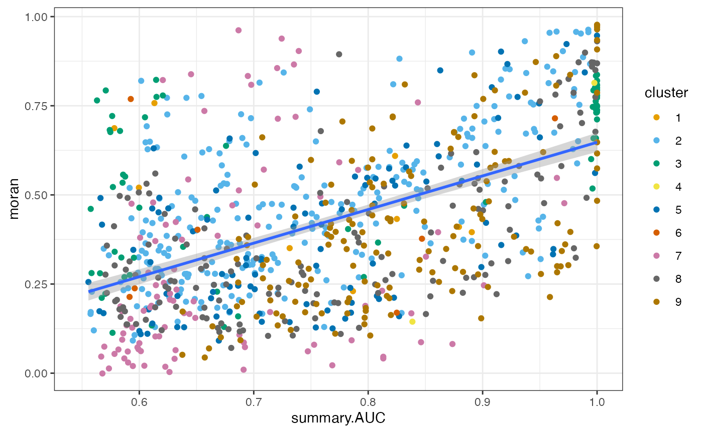
They all seem to be very significant.
The correlogram finds Moran’s I for higher and higher order of neighbors and can be a proxy for distance. It’s
system.time({
sfe <- runUnivariate(sfe, "sp.correlogram", top_markers, order = 6,
zero.policy = TRUE, BPPARAM = MulticoreParam(2))
})
#> user system elapsed
#> 718.079 68.374 498.036
plotCorrelogram(sfe, top_markers)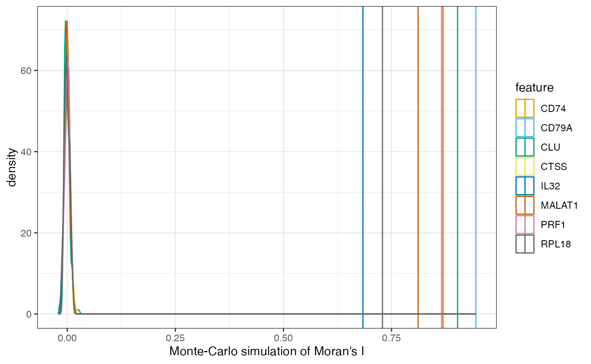
Here we see different patterns of decay in spatial autocorrelation and different length scales of spatial autocorrelation. PF4 is a marker gene very specific cluster 10, which is a small cluster, for platelets. There are only 27 cells in that cluster, so higher order neighbors are very likely to be from other clusters. Marker genes for the other larger clusters with hundreds of cells nevertheless display different patterns in the correlogram.
Local Moran’s I
sfe <- runUnivariate(sfe, "localmoran", features = top_markers)
plotLocalResult(sfe, "localmoran", top_markers, colGeometryName = "centroids",
divergent = TRUE, diverge_center = 0, ncol = 3)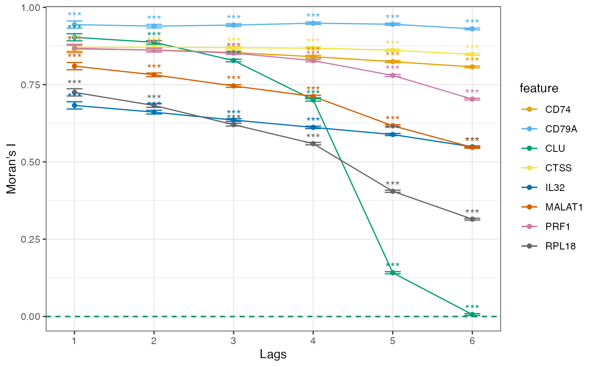
We also plot the histograms, but for now the results need to ba added
to colData first.
new_colname <- paste0("cluster", seq_along(top_markers), "_",
top_markers_symbol, "_localmoran")
for (i in seq_along(top_markers)) {
g <- top_markers[i]
colData(sfe)[[new_colname[i]]] <-
localResult(sfe, "localmoran", g)[,"Ii"]
}
plotColDataHistogram(sfe, new_colname, fill_by = "cluster") +
scale_fill_manual(values = ditto_colors) +
ggtitle("Local Moran's I") +
theme(legend.position = "top") +
scale_y_log10() +
annotation_logticks(sides = "l")
#> Warning: Transformation introduced infinite values in continuous y-axis
Again, the y axis is log transformed to make the tail more visible. For some clusters, the top marker gene’s local Moran’s I forms its own peak for cells in the cluster with higher local Moran’s I than other cells. However, sometimes cells within the cluster form a long tail shared with some cells from other clusters. Then the local Moran’s I could be another method for differential expression. Or since both local Moran’s I and Leiden clustering use the k nearest neighbor graph in PCA space, local Moran’s I of marker genes or perhaps eigengenes signifying gene programs for each cell type on this k nearest neighbor graph can validate or criticize Leiden clusters. Furthermore, interestingly, for some genes, the tallest peak in the histogram is away from 0.
The scatter plots as shown in the “spatial” analyses for QC metrics section can be made to see how local Moran’s I relates to the expression of the gene itself.
i <- 6 # Change if running this notebook
plotExpression(sfe, top_markers[i], x = new_colname[i], color_by = "cluster") +
scale_color_manual(values = ditto_colors) +
coord_flip() +
# comment out in case of error after changing i
geom_density2d(data = as.data.frame(colData(sfe)) |>
mutate(gene = logcounts(sfe)[top_markers[i],]),
mapping = aes(x = .data[[new_colname[i]]], y = gene),
color = "blue", linewidth = 0.3)
#> Scale for colour is already present.
#> Adding another scale for colour, which will replace the existing scale.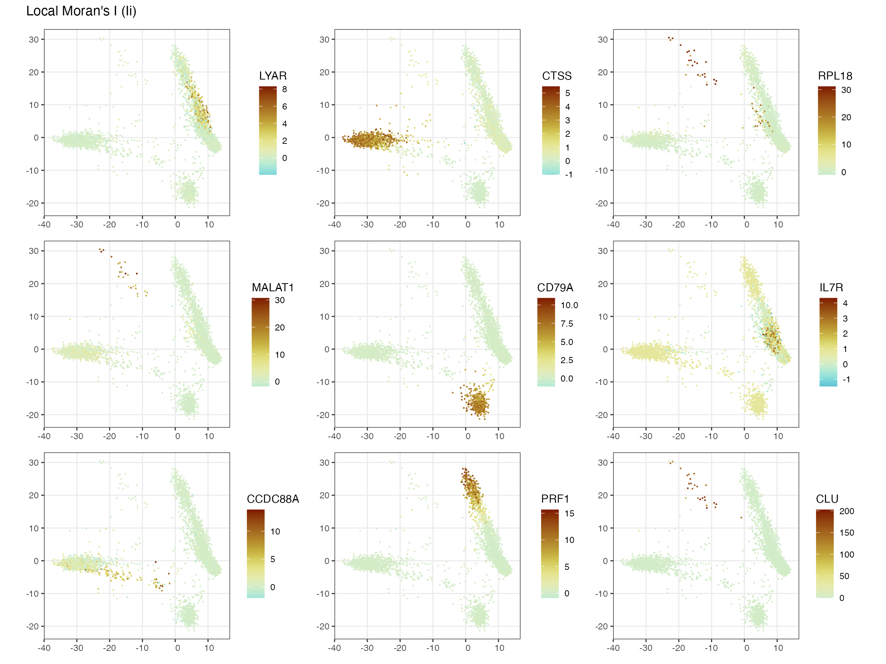
For this gene, just like for total UMI counts, there are two wings
and a central value where local Moran’s I is around 0, and generally
cells with higher expression of this gene have higher local Moran’s I
for this gene as well. The density contours show that cells concentrate
around 0 expression and some weaker positive local Moran. The streak of
cells with 0 expression means that many cells don’t express this gene
but their neighbors have low and slightly homogeneous expression of this
gene. This pattern may be different for different genes. Also, the
p-values for each cell for local Moran’s I are available and corrected
for multiple hypothesis testing, and can be plotted. The p-values are
based on the z score of the local Moran statistic, although how the
statistic is distributed for gene expression data warrants more
investigation. This p-value can also be computed with permutation (see
localmoran_perm()).
localResultAttrs(sfe, "localmoran", top_markers[1])
#> [1] "Ii" "E.Ii" "Var.Ii" "Z.Ii"
#> [5] "Pr(z != E(Ii))" "mean" "median" "pysal"
#> [9] "-log10p" "-log10p_adj"LOSH
sfe <- runUnivariate(sfe, "LOSH", top_markers)
plotLocalResult(sfe, "LOSH", top_markers, colGeometryName = "centroids", ncol = 3)
In the two genes on the right, it’s interesting to see higher LOSH in the middle cluster. The two genes on the left have some outliers throwing off the dynamic range. but it seems that their high LOSH regions are different.
Again, we plot the histograms
new_colname2 <- paste0("cluster", seq_along(top_markers), "_",
top_markers_symbol, "_losh")
for (i in seq_along(top_markers)) {
g <- top_markers[i]
colData(sfe)[[new_colname2[i]]] <-
localResult(sfe, "LOSH", g)[,"Hi"]
}
plotColDataHistogram(sfe, new_colname2, fill_by = "cluster") +
scale_fill_manual(values = ditto_colors) +
ggtitle("Local heteroscedasticity") +
theme(legend.position = "top") +
scale_y_log10() +
annotation_logticks(sides = "l")
#> Warning: Transformation introduced infinite values in continuous y-axis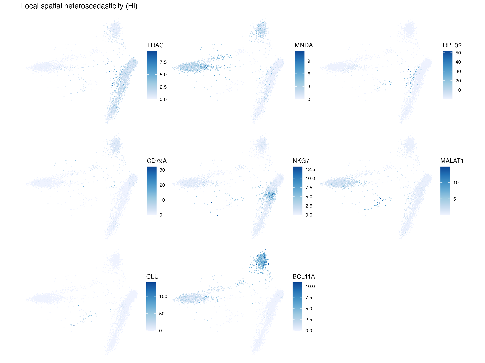
Relationship between expression and LOSH is more complicated. For some genes, such as the top marker gene for cluster 1 LYAR, cells in the cluster, i.e. higher expression, also have higher LOSH, much like how in Poisson and negative binomial distributions, higher mean also means higher variance. However, for some genes, such as the top marker gene for cluster 2 CTSS, have lower LOSH among cells that have higher expression, which means expression of this gene is more homogeneous within the cluster, consistent with local Moran.
i <- 6 # Change if running this notebook
plotExpression(sfe, top_markers[i], x = new_colname2[i], color_by = "cluster") +
scale_color_manual(values = ditto_colors) +
coord_flip() +
# comment out in case of error after changing i
geom_density2d(data = as.data.frame(colData(sfe)) |>
mutate(gene = logcounts(sfe)[top_markers[i],]),
mapping = aes(x = .data[[new_colname2[i]]], y = gene),
color = "blue", linewidth = 0.3)
#> Scale for colour is already present.
#> Adding another scale for colour, which will replace the existing scale.
For this gene, the density contour indicates that many cells don’t express this gene and have homogeneous neighborhoods also with low expression. That streak around 0 expression means that neighbors of cells that don’t express this gene have different levels of heterogeneity in this gene.
Moran plot
Here we make Moran plots for the top marker genes.
sfe <- runUnivariate(sfe, "moran.plot", features = top_markers, colGraphName = "knn10")As a reference, we show Moran’s I for the top marker genes, which is the slope of the line fitted to the Moran scatter plot.
top_markers_df[top_markers,]
#> DataFrame with 9 rows and 6 columns
#> FDR summary.AUC cluster symbol moran
#> <numeric> <numeric> <factor> <character> <numeric>
#> ENSG00000145220 2.80778e-08 0.890519 1 LYAR 0.395492
#> ENSG00000163131 2.20884e-15 0.993881 2 CTSS 0.867372
#> ENSG00000063177 5.31717e-17 1.000000 3 RPL18 0.737752
#> ENSG00000251562 1.82591e-13 0.997643 4 MALAT1 0.814179
#> ENSG00000105369 2.64693e-15 0.999939 5 CD79A 0.946637
#> ENSG00000168685 9.48170e-13 0.963182 6 IL7R 0.714728
#> ENSG00000115355 3.74026e-10 0.971350 7 CCDC88A 0.476699
#> ENSG00000180644 3.77998e-15 1.000000 8 PRF1 0.868973
#> ENSG00000120885 2.69076e-23 1.000000 9 CLU 0.907935
#> log_p_adj
#> <numeric>
#> ENSG00000145220 7.55164
#> ENSG00000163131 14.65584
#> ENSG00000063177 16.27432
#> ENSG00000251562 12.73852
#> ENSG00000105369 14.57726
#> ENSG00000168685 12.02311
#> ENSG00000115355 9.42710
#> ENSG00000180644 14.42251
#> ENSG00000120885 22.57013There’s no significant marker gene for cluster 7. These plots are shown in sequence
plts <- lapply(top_markers, moranPlot, sfe = sfe, color_by = "cluster")
#> Warning in value[[3L]](cond): Too few points for stat_density2d, not plotting
#> contours.
#> Warning in value[[3L]](cond): Too few points for stat_density2d, not plotting
#> contours.
#> Warning in value[[3L]](cond): Too few points for stat_density2d, not plotting
#> contours.
wrap_plots(plts, widths = 1, heights = 1) +
plot_layout(ncol = 3, guides = "collect") +
plot_annotation(tag_levels = "1")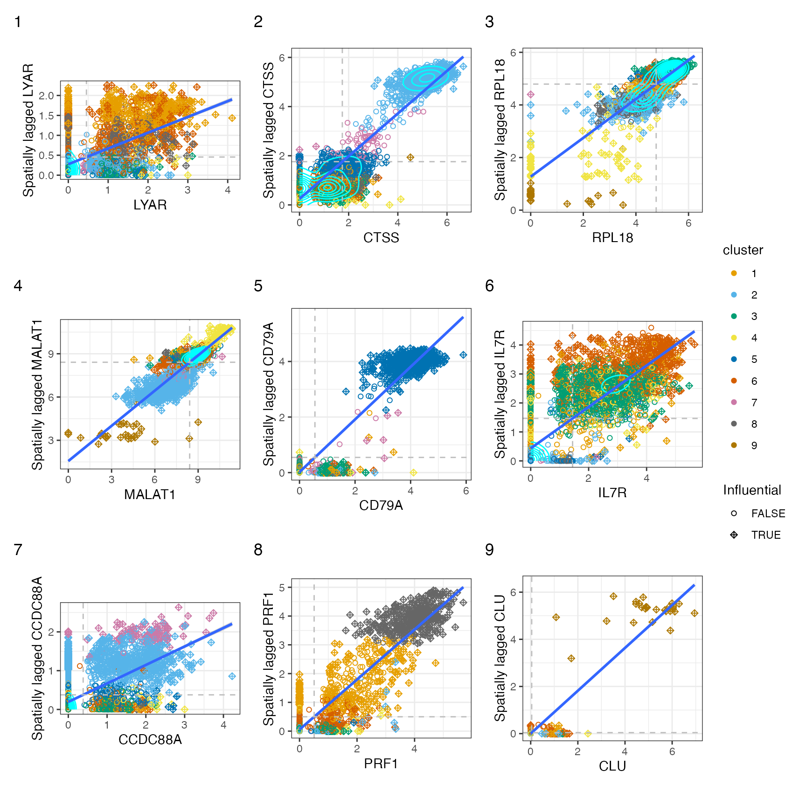
For some genes, the points are so concentrated around the origin that there aren’t “enough” points elsewhere to plot the density contours. But for the cells that do express these genes, there are clusters on this plot. Some genes are not expressed in many cells, but those cells have neighbors that do express the gene, hence the vertical streak at x = 0.
Here we applied univariate spatial statistics to the k nearest neighbor graph in the gene expression PCA space rather than the histological space. Just like in histological space, it would be impractical to examine all these statistics gene by gene, so multivariate analyses that incorporate the k nearest neighbor graph may be interesting.
Session info
sessionInfo()
#> R version 4.2.2 (2022-10-31)
#> Platform: x86_64-apple-darwin17.0 (64-bit)
#> Running under: macOS Big Sur ... 10.16
#>
#> Matrix products: default
#> BLAS: /Library/Frameworks/R.framework/Versions/4.2/Resources/lib/libRblas.0.dylib
#> LAPACK: /Library/Frameworks/R.framework/Versions/4.2/Resources/lib/libRlapack.dylib
#>
#> locale:
#> [1] en_US.UTF-8/en_US.UTF-8/en_US.UTF-8/C/en_US.UTF-8/en_US.UTF-8
#>
#> attached base packages:
#> [1] stats4 stats graphics grDevices utils datasets methods
#> [8] base
#>
#> other attached packages:
#> [1] dplyr_1.1.0 patchwork_1.1.2
#> [3] spdep_1.2-7 sf_1.0-9
#> [5] spData_2.2.1 sp_1.6-0
#> [7] BiocSingular_1.14.0 stringr_1.5.0
#> [9] BiocParallel_1.32.5 bluster_1.8.0
#> [11] scran_1.26.2 scater_1.27.5
#> [13] ggplot2_3.4.1 scuttle_1.8.4
#> [15] BiocNeighbors_1.16.0 DropletUtils_1.18.1
#> [17] SpatialExperiment_1.8.0 SingleCellExperiment_1.20.0
#> [19] SummarizedExperiment_1.28.0 Biobase_2.58.0
#> [21] GenomicRanges_1.50.2 GenomeInfoDb_1.34.9
#> [23] IRanges_2.32.0 S4Vectors_0.36.1
#> [25] BiocGenerics_0.44.0 MatrixGenerics_1.10.0
#> [27] matrixStats_0.63.0 SpatialFeatureExperiment_1.0.3
#> [29] Voyager_1.0.8
#>
#> loaded via a namespace (and not attached):
#> [1] systemfonts_1.0.4 igraph_1.4.0
#> [3] splines_4.2.2 digest_0.6.31
#> [5] htmltools_0.5.4 viridis_0.6.2
#> [7] magick_2.7.3 fansi_1.0.4
#> [9] magrittr_2.0.3 memoise_2.0.1
#> [11] ScaledMatrix_1.6.0 cluster_2.1.4
#> [13] limma_3.54.1 R.utils_2.12.2
#> [15] pkgdown_2.0.7 colorspace_2.1-0
#> [17] ggrepel_0.9.3 textshaping_0.3.6
#> [19] xfun_0.37 RCurl_1.98-1.10
#> [21] jsonlite_1.8.4 glue_1.6.2
#> [23] gtable_0.3.1 zlibbioc_1.44.0
#> [25] XVector_0.38.0 DelayedArray_0.24.0
#> [27] scico_1.3.1 Rhdf5lib_1.20.0
#> [29] HDF5Array_1.26.0 scales_1.2.1
#> [31] DBI_1.1.3 edgeR_3.40.2
#> [33] Rcpp_1.0.10 isoband_0.2.7
#> [35] viridisLite_0.4.1 units_0.8-1
#> [37] dqrng_0.3.0 rsvd_1.0.5
#> [39] proxy_0.4-27 metapod_1.6.0
#> [41] RColorBrewer_1.1-3 wk_0.7.1
#> [43] pkgconfig_2.0.3 R.methodsS3_1.8.2
#> [45] farver_2.1.1 sass_0.4.5
#> [47] deldir_1.0-6 locfit_1.5-9.7
#> [49] utf8_1.2.3 tidyselect_1.2.0
#> [51] labeling_0.4.2 rlang_1.0.6
#> [53] munsell_0.5.0 tools_4.2.2
#> [55] cachem_1.0.6 cli_3.6.0
#> [57] generics_0.1.3 evaluate_0.20
#> [59] fastmap_1.1.0 yaml_2.3.7
#> [61] ragg_1.2.5 knitr_1.42
#> [63] fs_1.6.1 purrr_1.0.1
#> [65] s2_1.1.2 nlme_3.1-162
#> [67] sparseMatrixStats_1.10.0 R.oo_1.25.0
#> [69] compiler_4.2.2 beeswarm_0.4.0
#> [71] e1071_1.7-13 tibble_3.1.8
#> [73] statmod_1.5.0 bslib_0.4.2
#> [75] stringi_1.7.12 highr_0.10
#> [77] desc_1.4.2 lattice_0.20-45
#> [79] Matrix_1.5-3 classInt_0.4-8
#> [81] vctrs_0.5.2 pillar_1.8.1
#> [83] lifecycle_1.0.3 rhdf5filters_1.10.0
#> [85] jquerylib_0.1.4 cowplot_1.1.1
#> [87] bitops_1.0-7 irlba_2.3.5.1
#> [89] R6_2.5.1 KernSmooth_2.23-20
#> [91] gridExtra_2.3 vipor_0.4.5
#> [93] codetools_0.2-19 boot_1.3-28.1
#> [95] MASS_7.3-58.2 rhdf5_2.42.0
#> [97] rprojroot_2.0.3 rjson_0.2.21
#> [99] withr_2.5.0 GenomeInfoDbData_1.2.9
#> [101] mgcv_1.8-41 parallel_4.2.2
#> [103] grid_4.2.2 beachmat_2.14.0
#> [105] class_7.3-21 rmarkdown_2.20
#> [107] DelayedMatrixStats_1.20.0 ggnewscale_0.4.8
#> [109] ggbeeswarm_0.7.1